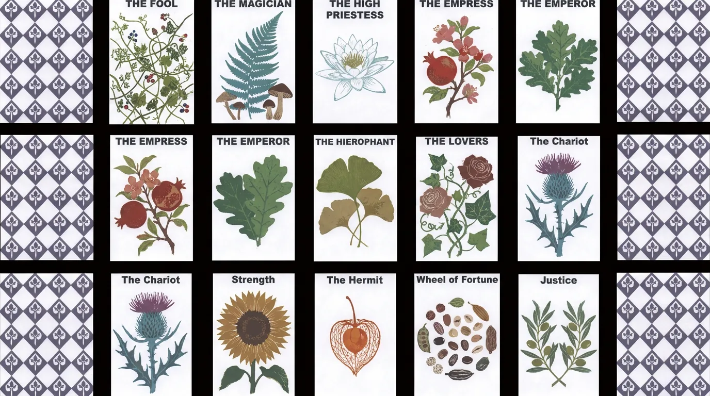

Type & Print / PROJECT 25
The Word of Plants
The Word of Plants · 植物之语
一套以植物诠释塔罗牌大阿卡纳的印刷卡片系列。
- ROLE
- 字体、版面与印刷视觉设计
- TIME
- 项目年份待确认
- TOOLS
- 设计工具清单未提供
- TYPE
- Visual design study
- STATUS
- Independent visual study

01 / ONE-LINE CONCEPT
One-line concept
一套以植物诠释塔罗牌大阿卡纳的印刷卡片系列。
02 / VISUAL SYSTEM
Visual system
- 灵感来源：塔罗牌抽牌仪式 + 植物花语文化，将自然意象与玄学解读结合，创造一套可以"抽牌问卜"的植物神谕卡
- 大阿卡纳系列：愚者/魔术师/女祭司/女皇/皇帝/教皇/恋人/战车/力量/隐者/命运之轮/正义，每张牌对应一种植物
- 互动方式：心中默念问题 → 随机抽一张植物牌 → 读取该植物的花语与象征 → 结合自身问题综合解读，得出启示
- 风格：丝网印刷/Risograph 质感，大胆撞色，每张牌独立配色与插画风格，统一中求变化
05 / FINAL OUTPUT
Final output
一套以植物诠释塔罗牌大阿卡纳的印刷卡片系列。每张塔罗牌对应一种独特的植物，通过植物的形态与象征意义解读塔罗牌的内涵。使用者可以像抽塔罗牌一样，心中带着问题随机抽取一张植物牌，通过植物的花语与象征意义，结合自身问题进行解读与反思。整体采用丝网印刷/Risograph质感，大胆撞色，探索植物、文字与玄学之间的诗意关联。
CONTINUE EXPLORING